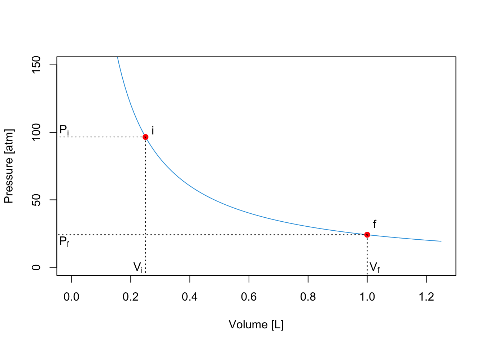
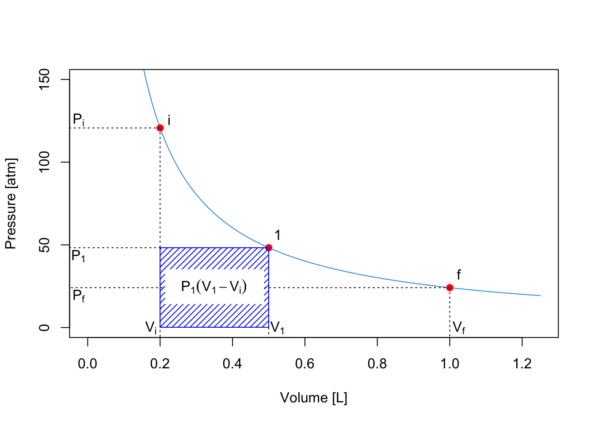
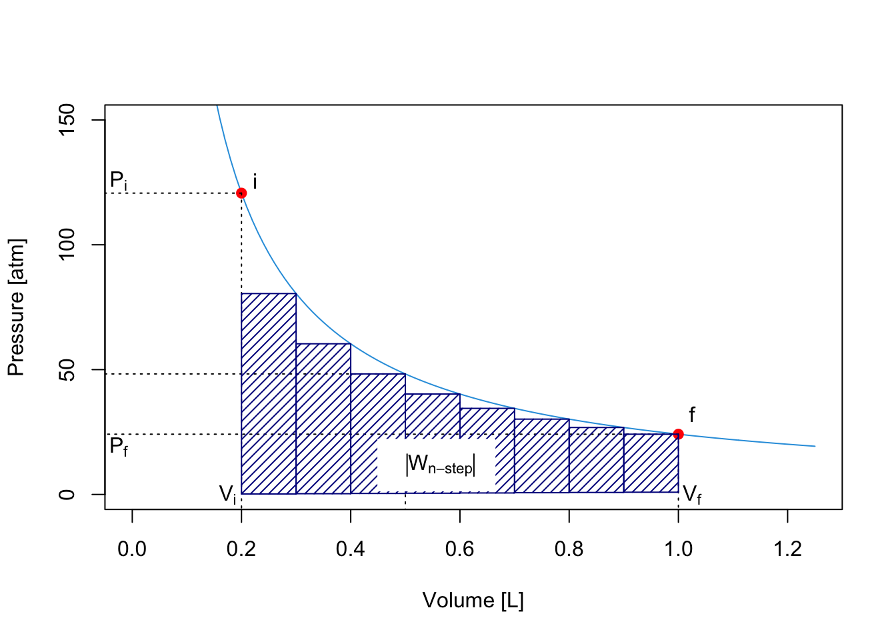
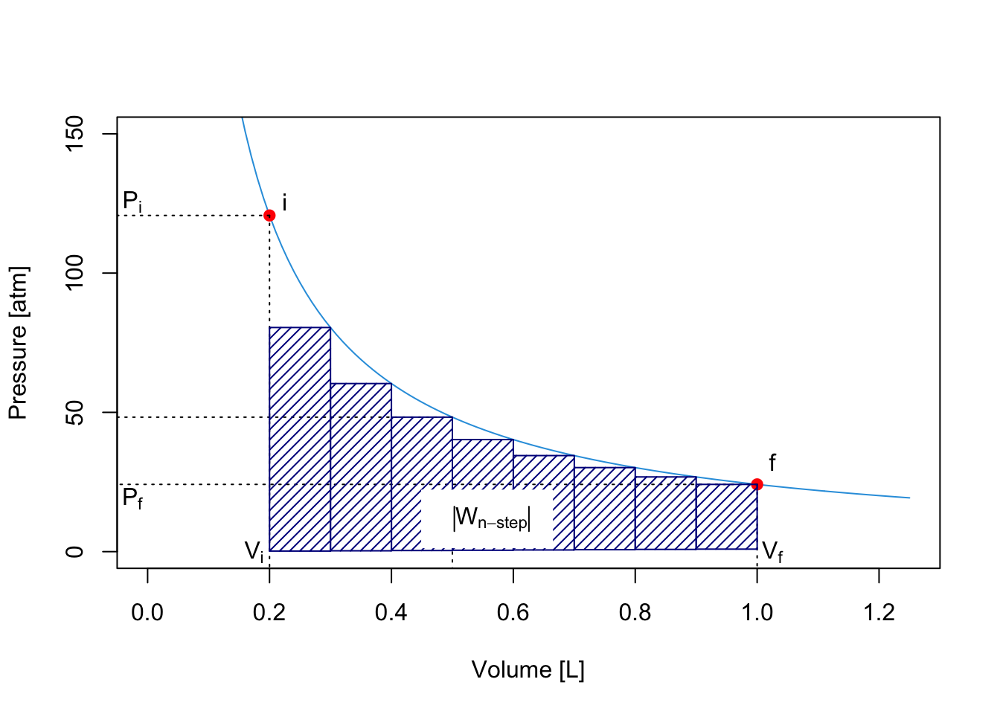

3 First Law of Thermodynamics
3.1 Energy in Thermodynamics
The definition of energy is:
xxx
In the absence of chemical transformations, heat and work are the only two forms of energy that thermodynamics is concerned with. Keeping in mind Definition 1.1, which gives the convention for the signs of heat and work, the definition of energy can be written as:
\[\begin{equation} U = Q + W, \tag{3.1} \end{equation}\]
which, in differential form, reads: \[\begin{equation} dU = đ Q + đ W, \tag{3.2} \end{equation}\]
which, using eq. (2.4) becomes:
\[\begin{equation} dU = đ Q - PdV, \tag{3.3} \end{equation}\]
3.1.1 Adiabatic Processes
An adiabatic process is defined as a process that happens without the exchange of heat. As such, \(đ Q=0\), and the work associated with an adiabatic process becomes a state function:
\[\begin{equation} dU=đ W=PdV, \tag{3.4} \end{equation}\]
3.1.2 Isochoric process
An isocoric process is a process in which the volume does not change. Therefore, \(đ W=0\), and \(dU = đ Q_V\), which for 1 mol of substance and using eq. (2.13), becomes:
\[\begin{equation} dU = đ Q_V = C_V dT. \tag{3.5} \end{equation}\]
Since no work is performed at these conditions, the heat becomes a state function. Eq. (3.5) also gives a mathematical justification of the concept of heat capacity at constant volume. \(C_V\) can now be interpreted as the partial derivative (a coefficient) of a state function (the energy):
\[\begin{equation} C_V = \left( \frac{\partial U} {\partial T} \right)_V, \tag{3.6} \end{equation}\]
where we have replaced the total derivative \(d\) with a partial one \(\partial\), and we have specified that the derivation happens at constant volume. Eq. @(eq:cvstatefunc) equation brings a rigorous definition of heat capacity at constant volume for 1 mol of substance:
3.1.3 Isobaric processes
In an isobaric process, the pressure does not change, hence \(dP=0\). Unfortunately, eq. (3.2) for this case does not simplify further, as happened in the two previous cases. However, in section 2.4.2, we have introduced the useful concept of heat capacity at constant $ P $. \(C_P\) was used in an adiabatic process in the same manner as \(C_V\) was used in the isochoric case. That is, as a coefficient to measure the amount of heat absorbed at constant pressure. Eq. (???)(eq:cvstatefunc) gave a mathematical definition of \(C_V\) as the partial derivative of a state function (the energy). But if heat capacities are coefficients, and coefficients are partial derivatives of state functions, how do we explain \(C_V\)?
In order to do so, we can introduce a new state function, called the enthalpy (\(H\)), as:
\[\begin{equation} H = U + PV, \tag{3.7} \end{equation}\]
and its differential, calculated as:
\[\begin{equation} dH = dU + d(PV) = dU + PdV + \overbrace{VdP}^{0}, \tag{3.8} \end{equation}\]
which can be rearranged as:
\[\begin{equation} dU = dH -PdV, \tag{3.9} \end{equation}\]
Replacing eq. (3.9) into eq. (3.3):
\[\begin{equation} dH -PdV = đ Q_P - PdV, \tag{3.10} \end{equation}\]
which simplifies to:
\[\begin{equation} dH = đ Q_P. \tag{3.11} \end{equation}\]
Eq. (3.11) establishes that the heat exchanged at constant pressure is equal to a new state function called the enthalpy, defined by eq. @(eq:enthalpydef). It also establishes a mathematical justification of the concept of heat capacity at constant pressure. Similarly to \(C_V\), \(C_P\) can now be interpreted as the partial derivative (a coefficient) of the new state function (the enthalpy):
\[\begin{equation} C_P = \left( \frac{\partial H} {\partial T} \right)_P, \tag{3.12} \end{equation}\]
Eq. (3.12) brings also a rigorous definition of heat capacity at constant pressure for 1 mol of substance:
3.1.4 Isothermic processes
xxx JT experiment xxx
3.2 The First Law of Thermodynamics
We finally come to a working definition of the first law. If we take an isolated system—i.e., a system that does not exchange heat nor mass with its surroundings—its energy is conserved. If the energy is conserved, \(dU=0\). Therefore, for an isolated system:
\[\begin{equation} đ Q = -đ W, \tag{3.13} \end{equation}\]
and heat and work can be easily calculated using any of the appropriate formulas introduced in either Section 2.3 or 2.4.
The first law is a conservation law. It is intuitive since it comes directly from Lavoisier’s principle of “nothing is lost, nothing is created, everything is transformed.” Considering that the only system that is truly isolated is the universe, we can condense the first law in one simple sentence:
3.3 Reversible and Irreversible processes
3.3.1 Calculation of \(| W_{\text{max}} |\) and \(| W_{\text{min}} |\)
Let’s go back to the calculation of the work in a process at constant temperature. We can use the formulas obtained in section 2.3 to understand a little bit better the meaning of a path function. Let’s consider the following PV diagram, obtained from an ideal gas at constant \(T=298\) K:

where the isothermal expansion happens between \(P_i\) and \(P_f\). If the expansion happens in a one-step fast process, for example against a constant pressure \(P_f=P_{\text{ext}}\), the work is given by eq. (2.12). On the plot, the absolute value of the work4 is represented by the red area:  \[\begin{equation} \left| W_{\text{1-step}} \right| = P_{\text{ext}} (V_f-V_i) \tag{3.14} \end{equation}\]
However, if the process happens in two steps, by pausing at position (1) until equilibrium is reached, then we should calculate the work by dividing the process into two. The first process is an expansion between \(P\) and \(P_1\), whose absolute value of the work, \(W_A\), is represented by the blue area:
 \[\begin{equation}
\left| W_A \right| = P_1 (V_1-V_i)
\tag{3.15}
\end{equation}\]
\[\begin{equation}
\left| W_A \right| = P_1 (V_1-V_i)
\tag{3.15}
\end{equation}\]
The second process is an expansion between \(P_1\) and \(P_{\text{ext}}\), whose absolute value of the work is represented by the green area:

\[\begin{equation} \left| W_B \right| = P_f (V_f-V_1) \tag{3.16} \end{equation}\]
The total absolute value of the work for the 2-step process is given by the sum of the two areas:

\[\begin{equation} \left| W_{\text{2-step}} \right| = \left| W_A \right| + \left| W_B \right| = P_1 (V_1-V_i)+P_f (V_f-V_1). \tag{3.17} \end{equation}\]
As can be easily verified by comparing the shaded areas in the plots, \(\left| W_{\text{2-step}} \right| > \left| W_{\text{1-step}} \right|\).
We can easily extend this procedure to consider processes that happens in 3, 4, 5, …, \(n\) steps. What is the limit of this procedure? In other words, what happens when \(n \rightarrow \infty\)? A simple answer is given by the plot in Figure XXX, which clearly demonstrates that the maximum value of the area underneath the curve \(\left| W_{\text{max}}\right|\) is achieved in an \(\infty\)-step process, for which the work is calculated as:
\[\begin{equation} \left| W_{\infty \text{-step}} \right| = \left| W_{\text{max}} \right| = \sum_{n}^{\infty} P_n(V_n-V_{n-1}) = \int_{i}^{f} PdV. \tag{3.18} \end{equation}\]

 

The integral on the right hand side is similar to the integral that we already solved for eq. (2.8). Using the same trick, we can solve eq. (3.18) for an ideal gas as:
\[\begin{equation} \left| W_{\text{max}} \right| = nRT \int_{i}^{f} \frac{dV}{V} = nRT \ln \frac{V_f}{V_i}. \tag{3.19} \end{equation}\]
This example shows clearly why work is a path function. If we perform a fast 1-step expansion the system will perform an amount of work that is much smaller than the amount of work it can perform if the expansion between the same points happens slowly in an \(\infty\)-step process.
The same considerations that we made up to this point for expansion processes hold specularly for compression ones. The only difference is that the work associated with compressions will have a positive sign since it must be performed onto the system. As such, the amount of work for a transformation that happens in a finite amount of steps will be an upper bound to the minimum amount of work required to compress the system.5 \(\left| W_{\text{min}} \right|\) for compressions is calculated as the area underneath the PV curve, exactly as \(\left| W_{\text{min}} \right|\) for expansions in eq. (3.18).
3.3.2 Definition of reversible transformations
Let’s now consider the cycle in Figure XXX. The process in this case starts from state 1 (system at \(P_1V_1\)), expands to state 2 (system at \(P_2V_2\)), and compresses back to state 1 (system at \(P_1V_1\)).
xxx Expand more here on reversible processes